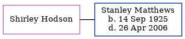

Henry Jayes, the husband of Mary Ann Horn (the three times great-aunt of Nigel Horne), and married Mary (a dressmaker) at St John The Baptist Church, Margate, Kent, England on Mar 30, 18571.
Citations
Kent Marriages And Banns - Findmypast
Family Tree

Generated by ged2site. Last updated on Jun 11, 2024